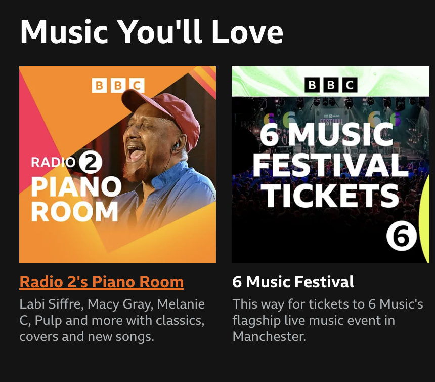
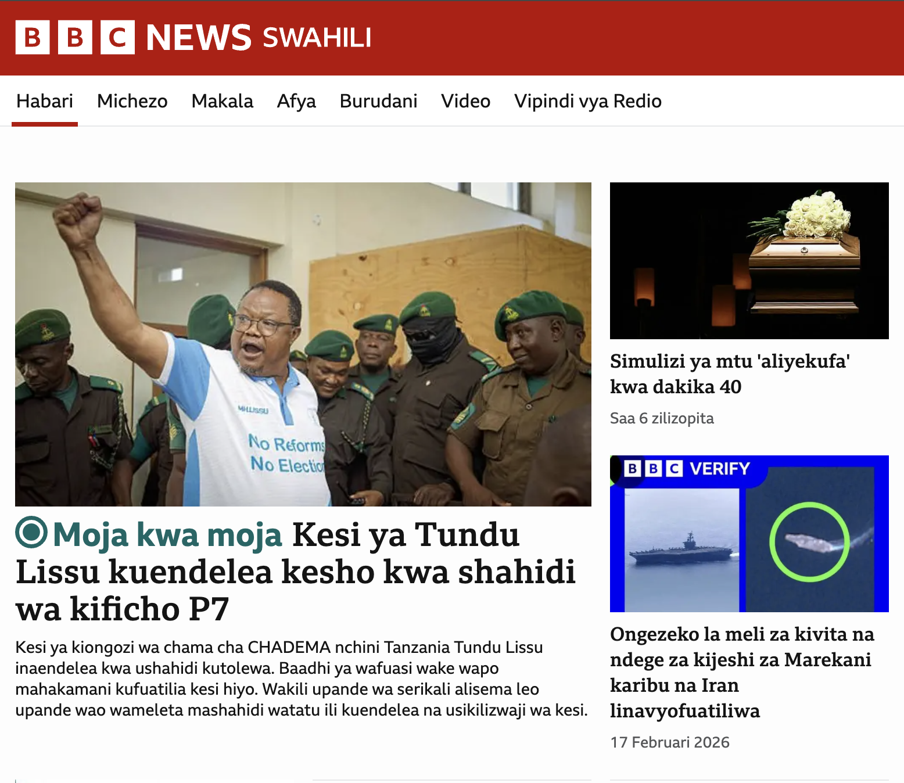
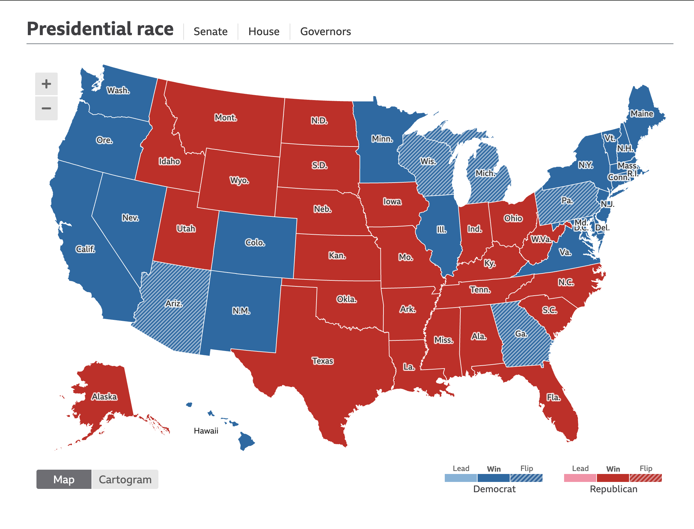
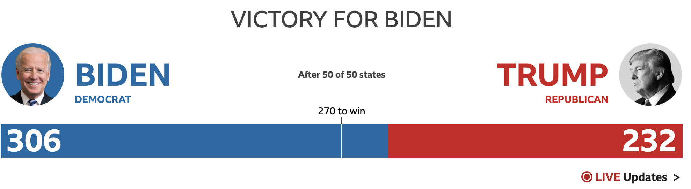
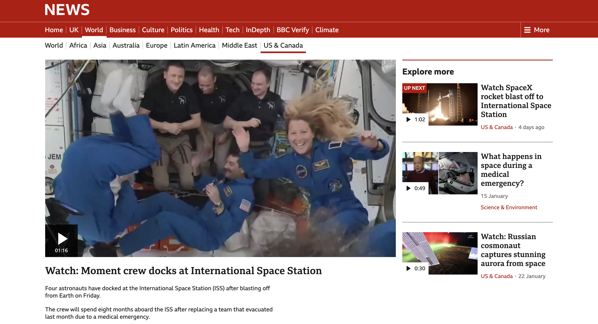

BBC Software Engineering Graduate Scheme
Recommendations • World Service • Elections • Short Form Video
1st rotation in Personalisation team
Key Achievements:
- Worked on Universal Recommendations engine during release process
- Built internal facing Visualisation Tool

2nd rotation in World Service team
Key Achievements:
- Worked on BBC's open-source Simorgh Web App
- Transitioned role to Business Analyst
- Managed projects to add AMP-specific cookies banner, Ad Slots for international audiences, and cache localisation

3rd rotation in Elections team
Key Achievements:
- Delivered banner & admin tooling on BBC Homepage, country interactive page, and state pages
- Worked with Reuters on interactives integration & fixes and worked with data partner on rehearsals
- Planned live coverage logistics under Covid constraints

2020 United States Elections: Presidential, Senate, & House
Key Achievements:
- Released products to users, banner released at top of BBC Homepage throughout one of the highest traffic periods in the site's history
- Worked overnight at New Broadcasting House monitoring coverage & handling live issues
- Election called, banner retired and pages moved to evergreen coverage

4th rotation in SFV team
Key Achievements:
- Integrated Universal Recommendations into video pages
- Ran A/B test comparing recommendation placement beside vs below video
